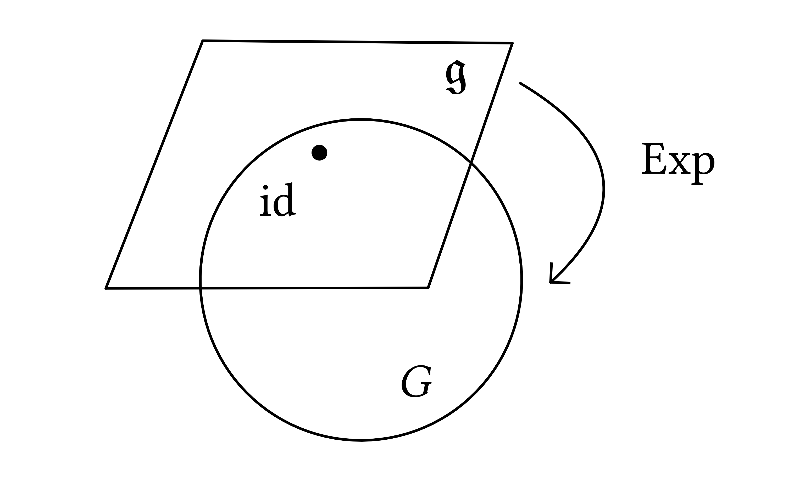
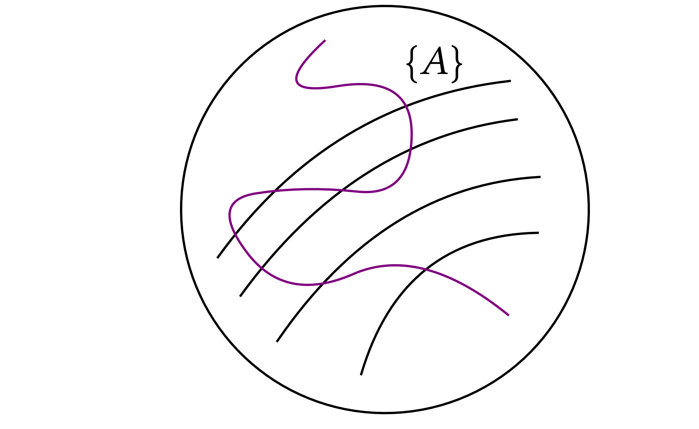
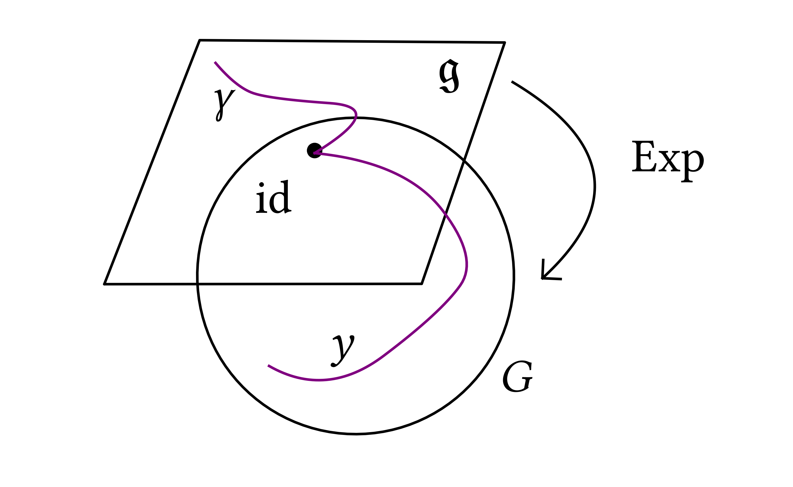
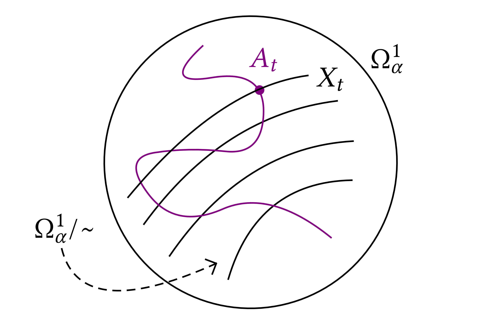
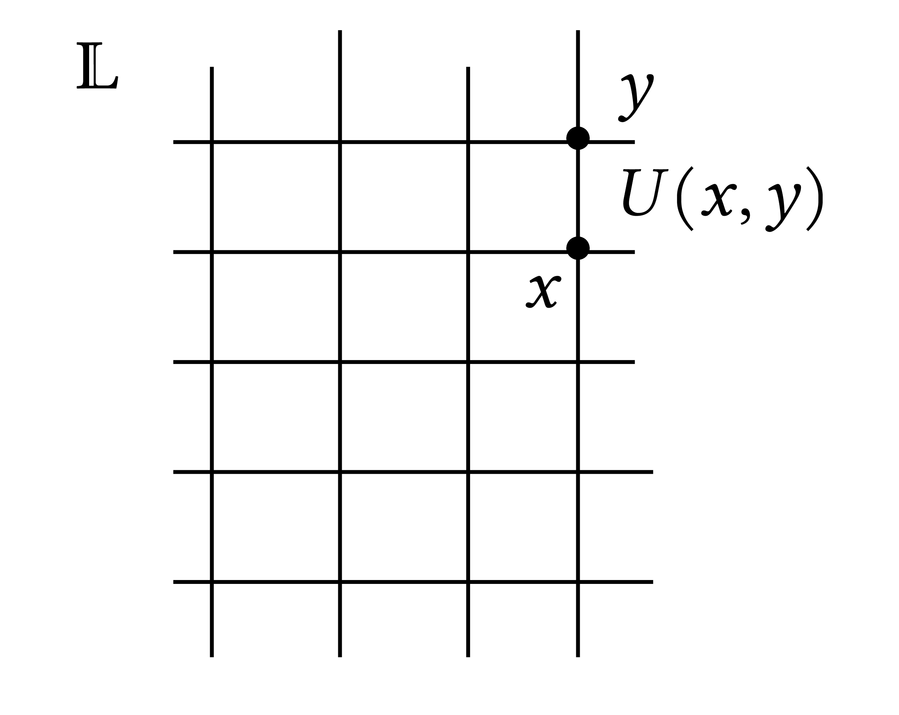
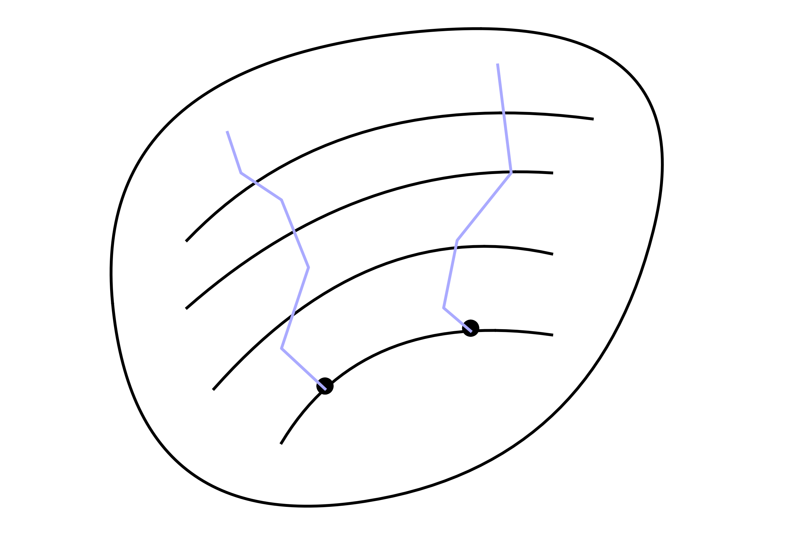
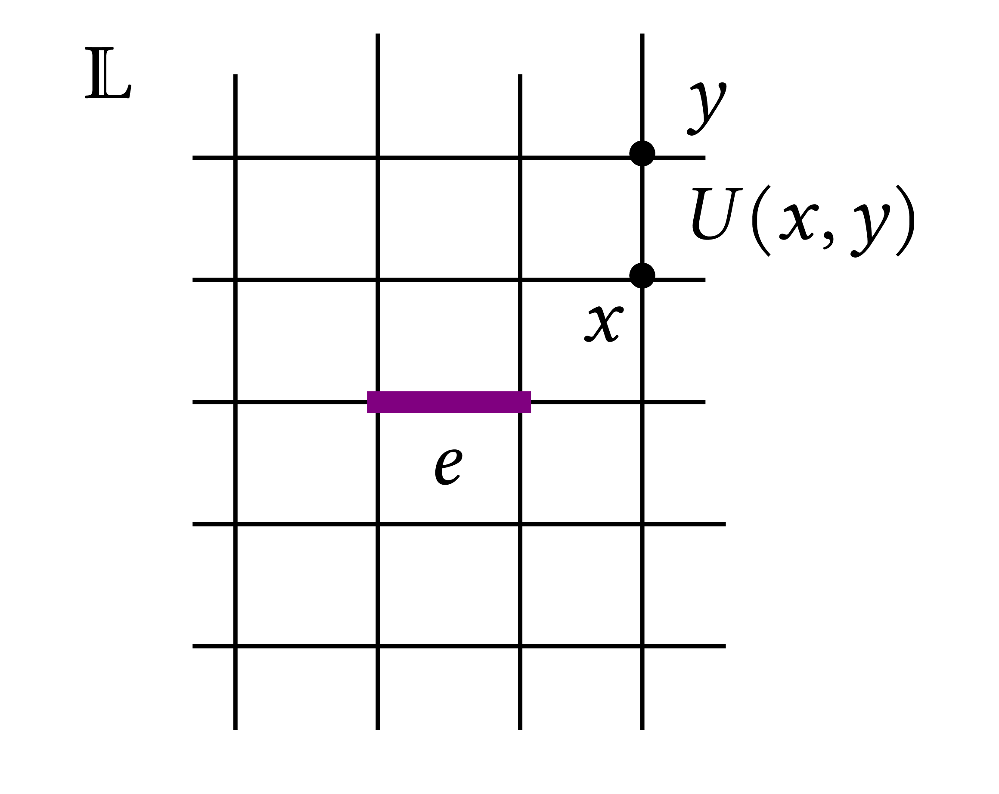
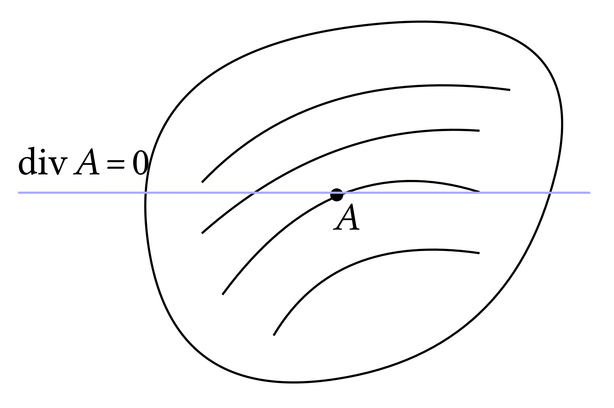
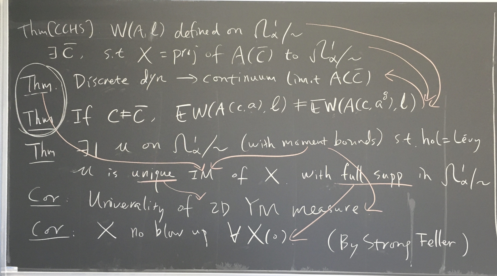
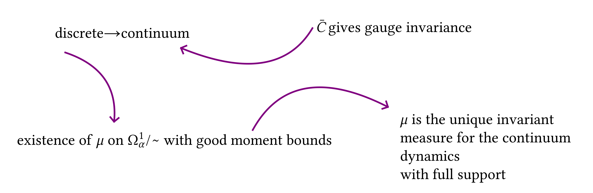

Shen | Stochastic quantisation | Lecture 1 | Monday July 22, 11:00–12:30
Stochastic quantisation of Yang–Mills in 2D
We will use the dynamics to study the measure . Symmetry, Observables which satisfy symmetry . use observables to characterize dynamics . interesting interactions with geometry (Riemmannian and sub-Riemmanian geometry, topology, Lie group theory)
We will focus mostly with recent paper with Chevyrev (2023) and older papers with Chandra, Chevyrev, Hairer (2020).
Plan. Lecture 1: YM, Lattice YM, main results. Lecture 2 : from lattive to continuum. Lecture 3: invariant measure (TBC).
Setup. Compact \(G\) Lie group \(\subseteq U (N)\). \(\mathfrak{g}\) Lie algebra (skew–hermitian matrices). Exponential map \(\mathfrak{g} \rightarrow G\). Lie algebra is the tangent space of the Lie group at the identity.
 |
YM model: \(A = \sum_{i = 1}^d A_i \mathrm{d} x_i\), \(A_i (x) \in \mathfrak{g}\), and |
We fixed a scalar product \(\langle, \rangle\) on \(\mathfrak{g}\). On the matrix representation it is just \(\operatorname{Tr} (A^{\ast} B)\).
Gauge symmetry. given a function \(g : \mathbb{T}^2 \rightarrow G\), we define the transformation
and it turns out that \(S (A) = S (A^g)\) (e.g. by explicit computation). Orbits for the group action
Stochastic quantisation. SPDE: we are looking at the (stochastic) gradient flow of the equation with potential \(S (A)\)
where \(\xi = (\xi_1, \ldots, \xi_d)\) is a Lie-algebra valued white-noise. This equation is not parabolic due to the gauge symmetry of \(S (A)\): the linear part is not the Laplacian. In geometric terms the Laplacian is \(\Delta = - \mathrm{d}^{\star} \mathrm{d} - \mathrm{d} \mathrm{d}^{\star}\) byt the linear part of the equation is \(- \mathrm{d}^{\star} \mathrm{d}\) so misses \(\mathrm{d} \mathrm{d}^{\star}\). More explicitly
(some weird second order operator). Actually what we want is the dynamics on the orbits of the group action, so we are free to add vector fields which are parallele to the orbits and obtain an SPDE of the form
 |
and we will use the shorthand notation |
Holonomy. from any smooth curve \(\ell : [0, T] \rightarrow \mathbb{T}^2\) we define \(y : [0, T] \rightarrow G\) starting with \(y (0) =\operatorname{id}\) and following the ODE:
 |
If \(\ell (0) = \ell (1) = x \in \mathbb{T}^2\) then, under gauge transformation, the holonomy changes by conjugation:
Taking a trace (or any class function) we obtain a gauge-invariant observable, usually called Wilson loop:
Dynamics. In order to define the dynamics we need to renormalize the equation and remove singularities:
the solutions of this SPDE live usually in \(C^{0 -}\) (in two dimensions). However there is a problem in define the Wilson loops since we cannot integrate a distribution on a line, i.e. \(\operatorname{hol} (A, \ell)\) is not well defined on \(C^{0 -}\) fields \(A\).
In the paper [CCHS], taking \(\alpha = 1^-\) it is defined a space \(\Omega_{\alpha}^1\)such that \(C^0 \subset \Omega_{\alpha}^1 \subset C^{\alpha - 1}\) such that the solution of the SPDE lives on this space and there is a notion of gauge equivalence \(\sim\) on \(\Omega_{\alpha}^1\).
 |
Theorem. There exists a choice of the renormalization constants \((C_{\varepsilon})_{\varepsilon}\) such that the projection \(X_t\) of \(A_t\) to \(\Omega_{\alpha}^1 / \sim\) is well defined in the limit \(\varepsilon \rightarrow 0\) and local dynamics on gauge orbits exists. |
The 2d YM measure. A generic connection is given by \((A_1, A_2)\). It is possible to apply a gauge transformation such that any connection is gauge equivalnent to one of the form \((0, \tilde{A}_2)\).
Consider \(\mathcal{L}= \{ \text{loops in $\mathbb{T}^2$} \}\). The holonomy gives an injective map \(\)
Injectivity is given by an argument like the following (in the abelian version): if \(\int_{\ell} A = \int_{\ell} A'\) for any loop \(\ell\) then \(A = A' + \nabla f\). Take a line \(\ell (x)\) from \(0\) to \(x\) and \(f (x) = \int_{\ell} A - \int_{\ell} A'\) and by choosing the line parallel to the coordinate axis at \(x\), one can recover the derivatives of \(f\).
A lot of papers on 2d YM: Gross / Driver / Levy (2006) / Park, Pfeffer / Sheffield, Yu (2023). The discuss a system of random holonomies, i.e. a probability measure on \(\{ \mathcal{L} \rightarrow G \} / G\). This model is integrable, i.e. the marginals are given by explicit expressions.
In the case of \(U (N)\):
In general, the explicit formula of the density of a graph with \(F\) faces and \(\ell\) edges is given in term of the group elements associated to the edges as
where \(P\) is the heat kernel.
Questions: 1) has \(\mu\) full support on \(\Omega_{\alpha}^1 / \sim\)? 2) Is \(\mu\) the unique invariant measure of \((X_t)_t\) (reversible)?
These questions are addressed in a work with Chevyrev [CS].
Lattice YM.
 |
Lattice \(\mathbb{L}\) with plaquettes: \(p = x_1 x_2 x_3 x_4\) where \(s : G \rightarrow \mathbb{R}\) is such that \(s (x) = s (x^{- 1})\) and \(s (x) = s (y x y^{- 1})\) (e.g. \(s (x) =\operatorname{Re}\operatorname{Tr}x\). gauge transformation : \(U^g (x, y) = g (x) U (x, y) g (y)\) |
The measure \(\mu\) is defined on \(G^{\mathbb{L}}\):
Remark: writing \(U (x, y) = \exp (\varepsilon A (x , y))\) we have, by the Baker–Campbell–Hausdorff formula:
since \(A (x_1, x_2) \approx \varepsilon \nabla A \cdot (x_2 - x_1)\).
Shen | Stochastic quantisation | Lecture 2 | Wednesday July 24, 9:00–10:30
Recall the setting
| \(\displaystyle \partial_t A = - \frac{1}{2} \nabla S (A) - \mathrm{d}_A \mathrm{d}^{\star} A + C A + \xi \) | (1) |
which has this (vague) structure
 |
and in [CCSHS] there is a choice of a (finite) constant \(C\) such that the solution is gauge covariant so that the dynamics is well-defined (in three dimensions the constant is diverging but there is a finite shift so that in some way this also applies). The presence of a non-gauge invariant counterterm is due to the regularisation of the noise which breaks the gauge invariance in first place. |
Lattice YM
Recall the setting of the previous lecture
 |
Lattice \(\mathbb{L}\) with plaquettes: \(p = x_1 x_2 x_3 x_4\) where \(s : G \rightarrow \mathbb{R}\) is such that \(s (x) = s (x^{- 1})\) and \(s (x) = s (y x y^{- 1})\). gauge transformation : \(U^g (x, y) = g (x) U (x, y) g (y)\) |
The measure is defined via
where \(\mathrm{d} U\) is the Haar measure on \(G^{\mathbb{L}}\).
For large class of functions \(s\) the lattice models all converge to the same continuum limit (in terms of correlations of Wilson loops). The function \(s\) measure how far \(U\) is from the identity.
Examples: the Wilson action is defined via
If \(G =\operatorname{SO} (N)\) we can write more explicitly the dynamics: for edge \(e\) we have four plaquettes \(p\) adjiacent to it (we write \(p > e\))
this dynamics can be used to prove mass gap (via log-Sobolev) at large temperature and also large \(N\) limit.
Another choice of action is given by the Villain action:
where \(e^{t \Delta}\) is the heat kernel on the Lie group \(G\).
Manton action:
where \(d_G (x, y)\) is the Riemmanian distance on the Lie group \(G\), and \(\log x \in \mathfrak{g}\) is the corresponding element in the Lie algebra given by the exponential map.
We will assume that our action belong to a class for which
where \(R_{\varepsilon}\) is a remainder term. Let us check this condition for the examples above. Varadhan formula gives
for small \(t\). Similar argument holds for Wilson action, writing \(x = e^{\log x}\) and performing a Taylor expansion.
The Langevin dynamics looks like
and lives on the space \(\mathcal{Q}= \prod_{\text{edges}} G\), \(\mathfrak{q}= \oplus_{\operatorname{edges}} \, \mathfrak{g}\). Here: the gradient \(\nabla\) is the one on the Lie group \(\mathcal{Q}\). Note that if \(\mathcal{B}\) is the Brownian motion on \(\mathcal{Q}\), standard facts is that it satisfies an SDE:
where \(\circ\) is Stratonovich and \(W\) is a Brownian motion on the Lie algebra \(\mathfrak{q}\). Therefore the formula for \(U\) is a Brownian motion on \(\mathcal{Q}\) with an additional gradient drift.
For all \(A \in \mathfrak{q}\), if \(f : \mathcal{Q} \rightarrow \mathbb{R}\) we define the Lie derivative
and define \(\nabla\) via
Note also that the term \(\mathrm{d}_U \mathrm{d}^{\star} U\) flows parallel to the gauge orbits. We also rescale the lattice so that the spacing is of size \(\varepsilon\):
Theorem
if \(t \ll 1\) and the initial conditions converge in appropriate sense. The norm \(\| \ast \|\) is the norm on \(\Omega_{\alpha}^1\) we introduced in the last lecture.
Remark. We will see: \(A_{\varepsilon} := \log U_{\varepsilon}\) satisfies
and we are not allowed to “renormalized” the discrete models, so we need to show that all the error terms contribute to the renormalization constant \(\bar{C}\) adding up precisely to give a gauge covariant dynamics.
Theorem
for small \(t \ll 1\).
One need a quantitative control to exclude effects from blow-up of solutions. The loop is the non-contractible loop which winds around the torus.
The space \(\Omega_{\alpha}^1 / \sim\) is defined modulo \(\alpha\)-Hölder gauge transformations, recall that \(\Omega^1_{\alpha} \subseteq C^{\alpha - 1}\) and \(0 < \alpha < 1\).
Theorem
A previous paper of Chevyrev proves essentially part 1) of the theorem where he uses a rough version of Uhlenbeck compactness plus the integrability of the 2d YM measure.
Corollary
To show this we show tightness of the discrete YM measure, the uniqueness is argued via the continuum dynamics.
Uhlenbeck compactness rouhgly says that
Ideally this would follows from regularity theory for PDEs, but gauge covariance of \(F (A)\) prevents this, the idea is to look at \(A\) for which \(\mathrm{d}^{\star} A = 0 \Leftrightarrow \operatorname{div}A = 0\), this will provide the additional constraint to obtain regularity. The gauge fixing is however quite subtle, due to ambiguity of gauge fixing (Gribov) or that no representatives satisfy the gauge fixing. This therefore cannot be done globally, one can do it locally around any fixed \(A\). Chevyrev used two different gauge fixing at different scales to obtain a similar result in the rough case. |
 |
In part 2) of the theorem we use Bourgain's argument to globalize the dynamics. Let's explain the general idea without specifically referring to YM dynamics. We have some approximate global dynamics \(X_{\varepsilon}\) which has an invariant measure \(\mu_{\varepsilon}\) and we want to show a bound on the existence time which is uniform as \(\varepsilon \rightarrow 0\). We want to make the probability
as small as possible uniformly in \(\varepsilon\), in particular \(\leqslant L^{n - p}\) for \(p > n\).
We consider the interval \([0, 1]\) and cut into \(k\) pieces of size \(1 / k\). By PDE argument if \(\| X_{\varepsilon} (0) \| < L\) then we have \(\sup_{t \in [0, 1 / k]} \| X_{\varepsilon} (t) \| \lesssim L\) for \(k \approx 2 / L^n\) for some large \(n\). Using assumed moment bounds on the invariant measure plus Markov inequality gives probability bounds, and imply that \(\mathbb{P} (\| X (0) \| > L) \leqslant L^{- p}\) for the initial condition and with \(p > n\). By stationarity of \(X_{\varepsilon}\) and invariance of \(\mu_{\varepsilon}\), decomposing the sup we have clearly
Shen | Stochastic quantisation | Lecture 3 | Thursday July 25, 9:00–10:30

Today we will scketch the proof of the convergence from lattice to continuum and of the uniqueness of the renormalization constant which achieves gauge covariance.

Sketch of proof that there is no blowup for all \(x \in \Omega^1_{\alpha} / \sim\)
\(T_x\): existence time for solution starting from \(x\), \(\mu\)-a.e. \(x\) \(\mathbb{P} (T_x = + \infty) \mathop{=}\limits 1\). Strong Feller: \(\forall g\) bounded & measurable, \(P_t g\) is continuous with \(P_t g (x) =\mathbb{E}_x [g (X_t)]\). \(\forall t\) \(x \mapsto \mathbb{P} (t < T_x) =\mathbb{E} [\mathbb{1}_{| X_t | < \infty}]\) is a continuous map by strong Feller. Full support means that we cannot find an open set which is not charged by the measure. So we can find a sequence \((x_n)_n\) in the support of \(\mu\), i.e. \(\mathbb{P} (T_{x_n} = + \infty) = 1\) and such that \(x_n \rightarrow x\) and the continuit of the map \(x \mapsto \mathbb{P} (t < T_x)\) give that \(\mathbb{P} (t < T_x) = 1\) for all \(x \in \Omega^1_{\alpha} / \sim\).
Sketch of proof of convergence from discrete to continuum
with \(U = e^{\varepsilon A}\).
We need some Riemmanian geometry. Recall that \(\mathfrak{g} \xrightarrow{\exp} G\), \(\mathfrak{q} \xrightarrow{\exp} Q = \prod_{\operatorname{edges}} G\).
Using the exponential map we pullback the Riemmanian metric from \(Q\) to the Lie algebra.
Curve \(A (t)\), s.t. \(\left. \frac{\mathrm{d}}{\mathrm{d} \tau} \right|_{\tau = 0} A (\tau) = B\),
with \(\Phi (A) = \frac{1 - e^{-\operatorname{ad}_A}}{\operatorname{ad}_A}\), with \(\operatorname{ad}_A : B \in \mathfrak{q} \mapsto [A, B] \in \mathfrak{q}\). By the invariance of the inner product we have
This is the Riemmanian metric on the Lie algebra \(\mathfrak{q}\) as chart over a neighborhood of the identity in \(Q\). We now pullback \(S (U)\):
How to compute \(\nabla f_p (A)\). By definition and Leibnitz:
on the other hand
and by identification one can expand the gradient and obtain the terms of the continuum equation.
Sketch of proof that only \(C = \bar{C}\) gives gauge invariance.
Let's do the Abelian case, with the equation
and if \(C = 0\) then gauge convariance otherwise not. \(A_0 \sim \bar{A}_0\) \(B = A - \mathrm{d} g g^{- 1} = A - \mathrm{d} f\), \(g = e^f\). Take \(\partial_t f = \Delta f\), then we show that \(B\) satisfies the same equation as \(A\),
and since \(\mathrm{d} B = \mathrm{d} A - \mathrm{d} \mathrm{d} f = \mathrm{d} A\), so if \(C = 0\) we have that \(B\) satisfies the same equation as \(A\).
To prove that when \(C \neq 0\) the configurations are not gauge equivalent we compute a loop integral:
which is gauge invariant since \(\int_{\ell} \mathrm{d} g g^{- 1} \in 2 \pi \mathbb{Z}\). Take \(A (0) = 2 \pi i \mathrm{d} x_1\) and \(\bar{A} (0) = 0\) and evolve the two configurations. The initial conditions are gauge equivalente since \(A (0) = \bar{A} (0) - \mathrm{d} g g^{- 1}\) with \(g (x_1, x_2) = e^{- 2 \pi i x_1}\). Solving the two equations we have:
and \(\mathbb{E}e^{i \int_{\ell} A (t)} \neq e^{i \int_{\ell} \bar{A} (t)}\) since the two sides differ by \(e^{\int_{\ell} e^{t C} 2 \pi \iota i \mathrm{d} x_1}\) and we can choose \(\ell\) (winding around the torus once) in such a way that
and for \(t > 0\) this is not \(= 1\) while at \(t = 0\) it is 1.